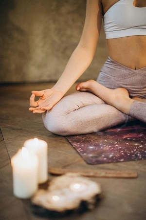
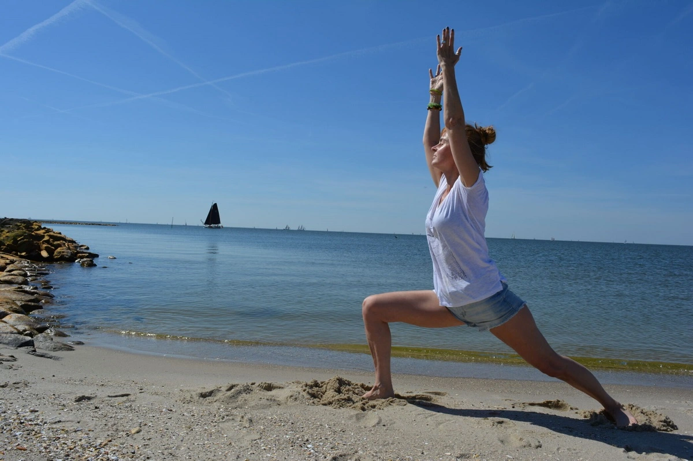
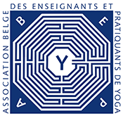

Oser l’aventure d’(H)Être Soi.
Yita propose des cours de yoga en version collective ou individuelle,
des séances de yoga avec les arbres en forêt de Soignes,
de la relaxation et des ateliers d’écriture.
Yita

L’art de l’attention douce
Yoga et écriture sont deux langages qui explorent le même espace : l’art de l’attention.
Être dans l’asana ou vivre pleinement le moment d’écriture . Tout en accordant autant de présence
et d’attention bienveillante aux temps morts entre les poses, entre les mots et les phrases.
S’éloigner naturellement du « vouloir beau » pour se rapprocher du « laisser émerger le juste ».
C’est finalement l’aventure d’une possible rencontre avec « Soi M’aime ».
L’art de l’élan vivant
Que ce soit au travers des postures ou dans l’écriture, il s’agit de se connecter au vivant sous toutes ses formes, des plus subtiles aux plus grossières.
Et de laisser ainsi le corps, le souffle et les mots guider notre inspiration vers une voie de ressourcement et de création.
C’est laisser le vent souffler dans l’âme pour en libérer une énergie nouvelle et vivifiante, à la fois puissance et légère.
L’art de l’instant présent
Enfin, yoga et écriture sont selon moi des alliés précieux pour se reconnecter à l’instant présent ; que ce soit dans l’attention douce portée au corps et au souffle.
Ou dans l’ici et maintenant du moment d’écriture, les deux pratiques nous enseignent l’écoute intérieure allégée de toute forme de jugement et de stress.
Elles nous encouragent à mettre de la lumière sur les réflexes et automatismes façonnés au fil du temps.
Le moment est venu de titiller les résistances, de repousser les limites et de s’accompagner dans la plénitude d’une possible transformation. Ici et maintenant.
Chaque cours est conçu avec attention et respect du rythme de chacun. Yita souhaite offrir une pratique accessible, progressive et profondément humaine, inspirée par l’écoute, la douceur et la sincérité. C’est un espace où l’on apprend à « s’habiter » pleinement.
Qu’il s’agisse des ateliers d’écriture ou des séances de yoga, la pratique se veut joyeuse et bienveillante.
Qui suis-je?

Photo : Véronique Guisset
Chemin yogique
Enceinte de 2 mois, je découvre le yoga avec Gina SCARITO en suivant un cours de yoga prénatal en mars 1998.
La gestation dans son sens le plus large et le yoga seront à partir de ce moment-là indissociables à mes yeux.
Je poursuis les cours de manière assidue, intuitive car le yoga me fait du bien, c’est une bulle précieuse mais déconnectée du rythme effréné de ma vie privée et professionnelle.
En 2009, je rejoins l’école de yoga Dhyana et reçois les merveilleux enseignements de Marie-Jo BILLAUT et Martine Richard
toutes deux formées par André Van Lysebeth lui-même disciple du maître spirituel et enseignant Swami SHIVANANDA SARASWATI.
Je m’inscris en 2014 pour un séjour de 3 semaines à l’Ashram Nikatam à Rishikkeshstrong sur la rive droite du Gange dans le nord de l’Inde
pour une pratique intensive de yoga, de méditation incluant des séminaires de philosophie animés par des Maîtres Hindous.
Je suis à cette époque en orbite autour du vaste univers que représente le yoga.
Lors de ma pratique dans les séances collectives, je ressens un sentiment de sécurité et de bien-être sans éprouver le besoin de
disséquer ni de comprendre. Je pratique régulièrement mais je ne vis pas encore en yoga.
C’est dans cet esprit de curiosité que j’enchaîne les stages avec Pierre Gariel,
plusieurs étés consécutifs aux Cernois dans le Jura en France et au centre Les Sources à Bruxelles.
Formé par Jean-Bernard RISHI et Sri B.K.S. IYENGAR, Pierre Gariel diffuse un enseignement précis, généreux qui éclaire tout sur son passage.
Bousculée par une tempête dans ma vie, je suis rattrapée pas les incohérences de certains de mes choix et leurs impacts sur ma santé.
Je m’inscris aux 8 semaines du programme de réduction du stress basé sur la méditation et
la pleine conscience élaboré par Jon Kabat Zinn et animé par Jackie Attala.
Ainsi qu’à des ateliers de communication bienveillante organisés par l’Université de Paix à Namur.
Dans cette quête de sens et de douceur, je démarre également la formation de 4 ans à l’enseignement du yoga en 2020
à l’ Ecole Dhyana Formation –dirigée par Marie-Jo BILLAUT et Martine RICHARD à Bruxelles.
Et je me lance dans l’aventure de la transmission empreinte d’une phrase phare d’André Van Lysebeth
« On enseigne avec ce que l’on est plus qu’avec ce que l’on sait ».
Je laisse le yoga entrer dans l’écriture de ma vie. Le rythme est doux, joyeux et créatif.
Le yoga devient ma respiration
Le yoga devient ma danse
Le yoga devient mon sens.
Depuis 2019, j’ai la chance d’animer chaque été des ateliers de yoga et de relaxation guidée au Camping Les Templiers dans la Réserve Naturelle des Gorges de l’Ardèche en France.
D’organiser des séances Découverte Yoga dans le cadre du Festival Lasemo à Enghien.
Et c’est dans cet élan que sont nés Yita et les Plumes Joyeuses en septembre 2023.
Deux ans plus tard, je terminais ma formation et obtenais le diplôme de l’école de formation à l’enseignement du Yoga
Martine Richard Poudelet et présentais mon travail de fin d’études sur les ateliers « Auprès de mon (H)Être » que j’anime toute l’année en Forêt de Soignes.
Le yoga est un art de vivre, une manière d’être au monde qui m’accompagne avec sincérité, douceur et rigueur dans le « devenir qui je suis ». La diversité des publics et des contextes dans lesquels je transmets mon expérience constitue une véritable source d’épanouissement personnel.
Yita est membre de l'assocication belge des enseignements et pratitiens de yoga.

Chemin d’écriture
Des carnets de poésie qu’on « s’échangeait dans la classe de Madame Andrée » aux ateliers d’écriture animés par des professionnels en passant par les dizaines de carnets intimes écrits en français, espagnol et anglais, l’écriture a toujours été à mes côtés. Neige, sable, buée, murs, galets, boîtes à tartines de mes enfants, … autant de supports auxquels je ne résiste pas. Lola Lafon l’exprime magnifiquement : « L’écriture ne promet rien mais permet tout ». Vraiment tout.
Naissance
Yita est une étape sur mon chemin de Vie, une merveilleuse petite graine semée pourtant en pleine tempête. Mais elle a grandi, s’est consolidée et déployée. Était venu le moment de me poser et de ne pas passer à côté d’un nouveau rendez-vous avec moi-même : oser le déracinement, plonger dans la grande profondeur de mes natures et me lancer pas à pas dans l’aventure de la transmission.
Transmettre un chemin de développement personnel nourri entre autres par le yoga et l’écriture. Une envie de partager un état d’esprit, un art de l’attention que ce soit sur un tapis, au travers d’ateliers d’écriture ou dans le quotidien de nos En-Vies. Car c’est dans l’échange que les potentiels d’Être se confrontent, se libèrent et se réalisent.